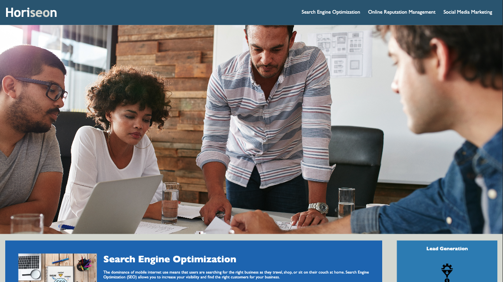
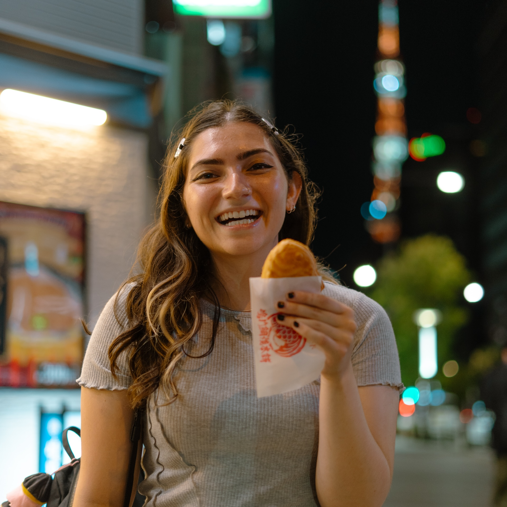

Camille Bagnani

Horiseon Refactor
Future Project
Future Project
About Me
Hey! 👋 My name is Camille and I'm on my way to becoming a full-stack developer! I'm currently studying HTML, CSS and JavaScript. 💻 I have a Bachelor of Science in Marketing and a minor in Documentary Studies from the University of Utah. I've spent two and a half years working in the music industry. I see a lot of synergies between music and tech, so I am excited to expand my skill set in the world of coding. I enjoy traveling, all things crafting, going to concerts and cooking! Food is my love language! 🍰
